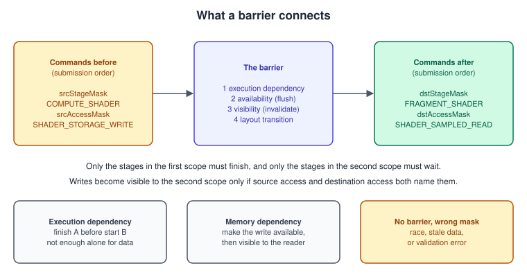
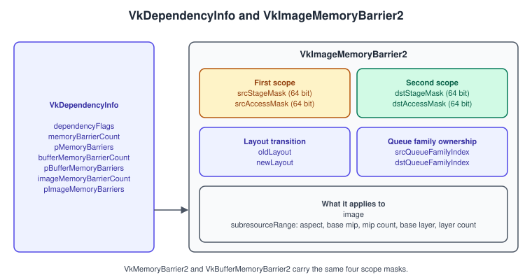
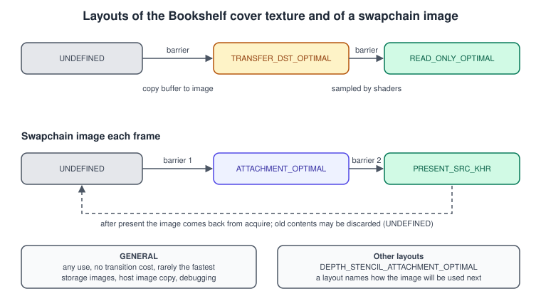
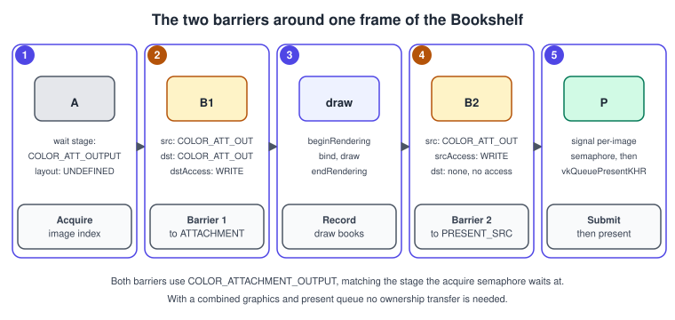
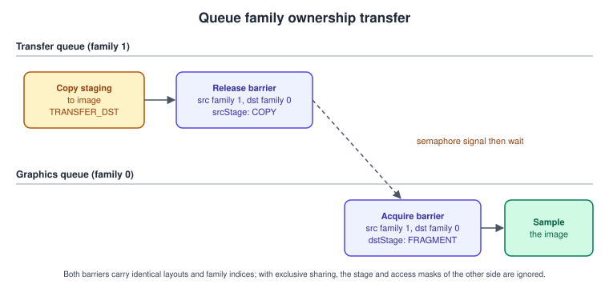

Synchronization and synchronization2
|
This content was generated with the assistance of AI and should be verified against the official documentation before being relied on in production. |
Vulkan does very little for you in the way of ordering. Commands are submitted in an order, but the GPU may start them in that order and finish them in any order, overlapping vertex work of one draw with fragment work of the previous one, or a compute dispatch with a copy. Memory is worse: a write by a shader sits in a cache that a different stage, or the same stage a moment later, cannot see until you say so. Synchronization is how you tell the implementation which commands must wait for which, and which writes must become visible to which reads. Almost every Vulkan bug that shows as flicker, garbage that appears only on one GPU, or a device lost after a driver update traces back to a missing or too-weak dependency, and almost every slowdown traces back to one that is too strong.
The facts on this page were checked in November 2026. They describe Vulkan 1.4 (headers 1.4.3xx, LunarG SDK 1.4.363.0) and, for the
Bookshelf running example, the Vulkan 1.3 minimum, in which VK_KHR_synchronization2 became core. Everything here uses the 64-bit
2-suffixed structures and commands; the original 32-bit versions are explained only so that older code can be read. The code is C++20 with
Vulkan-Hpp (RAII objects, plain vk:: structs for the commands), written for Vulkan 1.3 with the synchronization2 feature enabled.
Where the Bookshelf stands: after the swapchain and the frame loop (see Window System Integration and the Swapchain), this page supplies the two barriers around every frame, the barrier that makes an uploaded cover texture readable, the barrier between the compute dust particles and the draw that reads them, and the ownership transfer of a texture loaded on a separate transfer queue. Frames in flight and timeline semaphores are on Timeline Semaphores and Frames in Flight; queues and command buffers are on Queues and Command Buffers.
The general ideas of GPU parallelism that make this necessary are in GPU Architecture Basics, and the contrast with APIs that synchronize implicitly is in Explicit vs Implicit APIs.
The model: execution and memory dependencies

There are two separate problems, and a barrier addresses both.
Execution dependency. Command B must not start a given pipeline stage until command A has finished a given pipeline stage. This solves ordering problems: write-after-read (WAR), where a later write must not overwrite data an earlier read still needs, and also ensures that stages that depend on one another happen in order. It needs no memory scope. An execution dependency alone is enough when all that happens is a read followed by a write.
Memory dependency. A write made by A must be visible to a read or write by B. Hardware has caches; a write is first made available (flushed from the writer’s cache toward a shared level) and then made visible (the reader’s cache is invalidated for that data). Each barrier names which accesses in the first scope must become available and which accesses in the second scope they must become visible to. A memory dependency includes an execution dependency.
The hazards, and what each needs:
| Hazard | Meaning | Needs |
|---|---|---|
Read after write (RAW) |
B reads what A wrote. |
Execution dependency plus memory dependency: source access is the write, destination access is the read. |
Write after read (WAR) |
B writes what A reads. |
Execution dependency only. Source access mask is empty, since no write needs to become available. |
Write after write (WAW) |
B overwrites what A wrote, or a layout transition follows a write. |
Execution plus memory dependency, so that the writes occur in order and the later one wins. |
Read after read (RAR) |
Two reads. |
Nothing, unless a layout transition separates them. |
Each barrier defines two scopes:
-
The first synchronization scope contains the commands before the barrier in submission order, restricted to the pipeline stages in
srcStageMask. The first access scope is further restricted to the accesses insrcAccessMask. -
The second synchronization scope contains the commands after the barrier, restricted to the stages in
dstStageMask, and the second access scope to the accesses indstAccessMask.
Only work inside the scopes is affected. A barrier with source stage COMPUTE_SHADER and destination stage FRAGMENT_SHADER lets the
vertex shaders of later draws start immediately. That is the point of naming stages precisely: it is how you leave independent work
overlapping.
Three corollaries guide every barrier you write:
-
Stage masks and access masks must agree. Each access type is valid only with certain stages;
SHADER_SAMPLED_READpairs with shader stages,COLOR_ATTACHMENT_WRITEwithCOLOR_ATTACHMENT_OUTPUT. The validation layers report invalid pairs. -
A barrier synchronizes only what its scope says. Naming
FRAGMENT_SHADERas the destination does nothing for a later vertex shader read of the same data. -
Dependencies chain. If A→B and B→C are both synchronized and the stages line up, A→C is ordered too. That lets you use a narrow barrier now and rely on a later broad one, and it is why a barrier that is "too narrow" sometimes appears to work.
Implicit guarantees
Vulkan gives you three things for free. First, commands are submitted in order, and some operations (draw calls in one render pass writing the same attachment, for example) are internally ordered by rasterization rules. Second, a semaphore wait or a signal creates an execution dependency between submissions. Third, a fence signal happens after all work of the submission. Everything else, including every memory visibility guarantee, is yours to state. In particular, nothing in the API makes a write by one command visible to a later one just because it was submitted later.
synchronization2: what changed
VK_KHR_synchronization2 was promoted to the core of Vulkan 1.3 (2022). It repackages the same model so it is harder to get wrong:
| Old (sync1) | New (sync2, core 1.3) | What improved |
|---|---|---|
|
|
More bits, so new stages such as |
|
|
Splits |
Stages and access passed as separate parameters |
Carried inside each barrier struct |
Every barrier states its own scopes, so one |
|
|
One struct, |
|
|
Same members plus the four stage and access masks. |
|
|
The old two bits were confusing; using them as source or destination is deprecated. |
|
|
The stage for each semaphore wait or signal is part of that semaphore’s struct. |
|
|
Set can carry a full dependency; do not mix the two kinds on one event. |
|
|
Takes a stage mask rather than a single-bit stage type. |
Image layouts |
plus |
Layouts that do not depend on the aspect or use; the old specific layouts remain valid. |
On a device that supports only the extension, the same names carry the KHR suffix (vkCmdPipelineBarrier2KHR, VK_ACCESS_2_SHADER_READ_BIT_KHR).
Since the Bookshelf requires Vulkan 1.3, the core names are used throughout. The feature synchronization2 in
VkPhysicalDeviceVulkan13Features must be enabled when creating the device. The earlier books (VPG chapters 4 and 11, VCB chapters 3 and
4) teach vkCmdPipelineBarrier with TOP_OF_PIPE and BOTTOM_OF_PIPE and vkQueueSubmit; they are still functional but outdated, and
every concept they teach maps onto the new calls one to one.
Barrier anatomy

| Member | Meaning |
|---|---|
|
The first scope: stages that must complete, and writes that must be made available. |
|
The second scope: stages that wait, and reads or writes the data must become visible to. |
|
Layout transition (images only). |
|
Ownership transfer for exclusive resources. Use |
|
The resource and the part of it affected: aspect mask, mip levels and array layers for images. |
|
|
Stage names you will use
Stage (prefix VK_PIPELINE_STAGE_2_) |
Meaning |
|---|---|
|
Reading indirect draw and dispatch parameters. |
|
Reading index and vertex buffers (new in sync2; sync1 had one combined |
|
The classic pre-rasterization shader stages. |
|
Fragment shading, including sampling. |
|
Depth and stencil tests and writes. |
|
Blending and writes to colour attachments. |
|
Compute dispatches. |
|
The transfer operations, each now separate. |
|
Host reads and writes of mapped memory. |
|
Every graphics stage, or every stage. Convenient and slow. |
|
No stage (replaces the deprecated |
Stages from extensions (ACCELERATION_STRUCTURE_BUILD_BIT_KHR, RAY_TRACING_SHADER_BIT_KHR, TASK_SHADER_BIT_EXT, MESH_SHADER_BIT_EXT)
slot into the same masks; see Ray Tracing and
Mesh and Task Shaders.
Access names you will use
Access (prefix VK_ACCESS_2_) |
Typical stages |
|---|---|
|
|
|
|
|
any shader stage |
|
any shader stage |
|
|
|
|
|
|
|
|
|
Any: the broad masks, for debugging and for ownership transfers. |
Image layouts and transitions
An image has, for every subresource (mip level and array layer), a layout: a promise about how the next access will use it, which lets the driver choose compression, tiling or cache behaviour. Most GPUs today treat many layouts alike, but some (notably tile-based and older discrete GPUs) really do change the data. Using the wrong layout, or none, is invalid and can corrupt images on some hardware only.

| Layout | Use |
|---|---|
|
Only as |
|
Supports every use. No hidden optimisation, so it can be slower. Required for storage images on many implementations and used with host image copy. |
|
Written as a render target. |
|
Sampled, or used as an input attachment, with no writes. |
|
Source or destination of copies, blits and clears. |
|
Shown by the presentation engine. Only for swapchain images. |
|
For dynamic rendering local read (core in 1.4): reading attachments written earlier in the same rendering instance. |
How a transition behaves
A layout transition is part of a barrier and counts as both a read and a write of the image subresource, performed after the first scope and before the second. The Vulkan Guide’s wording is that the transition counts as a write, so a barrier that includes it must have a correct destination access mask; otherwise the transition and the following access form a write-after-write hazard. Further rules:
-
If
oldLayoutequalsnewLayoutand no ownership transfer happens, the layouts are ignored and the image content is preserved. -
Setting
oldLayout = UNDEFINEDallows the driver to discard the content and is correct for a freshly acquired swapchain image, a newly created image or any target you will overwrite entirely. It is wrong when you want to keep the data (for example, a mip level you still need). -
The image must have been created with the usage flag the layout implies (
COLOR_ATTACHMENTforATTACHMENT_OPTIMAL,SAMPLEDforREAD_ONLY_OPTIMAL,TRANSFER_DSTforTRANSFER_DST_OPTIMAL). -
Depth-only formats cannot use stencil layouts and stencil-only formats cannot use depth layouts;
ATTACHMENT_OPTIMALremoves this problem. -
Transition per subresource range. A mipmapped texture usually moves level by level during mip generation; see Textures, Samplers and Mipmaps.
-
With the host image copy feature (core in Vulkan 1.4, see Buffers, Images and Views) the host can copy to an image and transition its layout without a command buffer, which removes the staging copy and barrier for suitable uploads.
Barrier recipes
Each recipe is a source stage and access, a destination stage and access and, when the image changes use, two layouts. They follow the examples in the Vulkan Guide.
| Situation | Source stage and access | Destination stage and access | Layouts |
|---|---|---|---|
Acquired swapchain image to colour attachment (single queue family) |
|
|
|
Colour attachment to present |
|
|
|
Uploaded texture to sampled |
|
|
|
Compute output to indirect draw or index input |
|
|
none (buffer) |
Compute output to fragment sampling |
|
|
|
Transfer to vertex fetch |
|
|
none (buffer) |
Fragment shader read, then write as colour attachment (WAR) |
|
|
|
The two per-frame barriers deserve a figure of their own because every Vulkan program has them.

Code: a barrier helper and the frame
A small helper keeps every transition readable, and sets the fields explicitly rather than relying on constructor argument order.
#include <vulkan/vulkan_raii.hpp>
struct ImageBarrier {
vk::PipelineStageFlags2 srcStage = vk::PipelineStageFlagBits2::eNone;
vk::AccessFlags2 srcAccess = vk::AccessFlagBits2::eNone;
vk::PipelineStageFlags2 dstStage = vk::PipelineStageFlagBits2::eNone;
vk::AccessFlags2 dstAccess = vk::AccessFlagBits2::eNone;
vk::ImageLayout oldLayout = vk::ImageLayout::eUndefined;
vk::ImageLayout newLayout = vk::ImageLayout::eUndefined;
vk::ImageAspectFlags aspect = vk::ImageAspectFlagBits::eColor;
uint32_t baseMip = 0, mipCount = 1, baseLayer = 0, layerCount = 1;
};
void barrier(vk::CommandBuffer cmd, vk::Image image, const ImageBarrier& b) {
vk::ImageMemoryBarrier2 m{};
m.srcStageMask = b.srcStage;
m.srcAccessMask = b.srcAccess;
m.dstStageMask = b.dstStage;
m.dstAccessMask = b.dstAccess;
m.oldLayout = b.oldLayout;
m.newLayout = b.newLayout;
m.srcQueueFamilyIndex = VK_QUEUE_FAMILY_IGNORED; // no ownership transfer
m.dstQueueFamilyIndex = VK_QUEUE_FAMILY_IGNORED;
m.image = image;
m.subresourceRange = { b.aspect, b.baseMip, b.mipCount, b.baseLayer, b.layerCount };
vk::DependencyInfo dep{};
dep.setImageMemoryBarriers(m); // one barrier; pass an array to batch several
cmd.pipelineBarrier2(dep);
}The per-frame recording uses it twice. With dynamic rendering there are no render pass objects, so the layout transitions that a render
pass used to do through initialLayout, finalLayout and subpass dependencies are explicit barriers (see
Dynamic Rendering).
void Renderer::recordFrame(vk::raii::CommandBuffer& cmd, uint32_t imageIndex) {
vk::Image image = sc.images[imageIndex];
cmd.begin({ vk::CommandBufferUsageFlagBits::eOneTimeSubmit });
// Barrier 1: acquire -> colour attachment. The image content is not needed (UNDEFINED).
barrier(*cmd, image, {
.srcStage = vk::PipelineStageFlagBits2::eColorAttachmentOutput, // matches the acquire semaphore wait
.srcAccess = vk::AccessFlagBits2::eNone,
.dstStage = vk::PipelineStageFlagBits2::eColorAttachmentOutput,
.dstAccess = vk::AccessFlagBits2::eColorAttachmentWrite,
.oldLayout = vk::ImageLayout::eUndefined,
.newLayout = vk::ImageLayout::eAttachmentOptimal });
vk::RenderingAttachmentInfo color{};
color.imageView = *sc.views[imageIndex];
color.imageLayout = vk::ImageLayout::eAttachmentOptimal;
color.loadOp = vk::AttachmentLoadOp::eClear;
color.storeOp = vk::AttachmentStoreOp::eStore;
color.clearValue = vk::ClearColorValue(std::array{ 0.08f, 0.07f, 0.06f, 1.0f });
vk::RenderingInfo rendering{};
rendering.renderArea = vk::Rect2D{ {0, 0}, sc.extent };
rendering.layerCount = 1;
rendering.setColorAttachments(color);
cmd.beginRendering(rendering);
drawBookshelf(cmd); // pipelines, buffers, draws
cmd.endRendering();
// Barrier 2: colour attachment -> present. No destination stage: the semaphore handles the rest.
barrier(*cmd, image, {
.srcStage = vk::PipelineStageFlagBits2::eColorAttachmentOutput,
.srcAccess = vk::AccessFlagBits2::eColorAttachmentWrite,
.dstStage = vk::PipelineStageFlagBits2::eNone,
.dstAccess = vk::AccessFlagBits2::eNone,
.oldLayout = vk::ImageLayout::eAttachmentOptimal,
.newLayout = vk::ImageLayout::ePresentSrcKHR });
cmd.end();
}Three details make this correct:
-
The source stage of barrier 1 equals the stage at which the submit waits on the acquire semaphore (
COLOR_ATTACHMENT_OUTPUT), so the first scope of the barrier includes the semaphore wait. A source stage ofTOP_OF_PIPEorNONEwould not chain to the semaphore and is a classic cause of validation errors with the old API. -
Barrier 2 has an empty second scope because the next operation is the present, which is ordered by the semaphore the submit signals at
COLOR_ATTACHMENT_OUTPUT. The semaphore signal covers the layout transition because the transition is part of the first scope. -
If the same image were used for depth testing too, the depth image needs its own barrier with
EARLY_FRAGMENT_TESTSandLATE_FRAGMENT_TESTSandDEPTH_STENCIL_ATTACHMENT_WRITE(see the depth section below).
Code: uploading the cover texture
A texture is uploaded with a staging buffer, as described in Memory Heaps, Types and VMA. Synchronization wraps the copy: before it, the image becomes a transfer destination; after it, a sampled image.
void uploadTexture(vk::CommandBuffer cmd, vk::Buffer staging, vk::Image image,
uint32_t width, uint32_t height) {
// 1. UNDEFINED -> TRANSFER_DST_OPTIMAL. Nothing before us touches this image.
barrier(cmd, image, {
.srcStage = vk::PipelineStageFlagBits2::eNone,
.srcAccess = vk::AccessFlagBits2::eNone,
.dstStage = vk::PipelineStageFlagBits2::eCopy,
.dstAccess = vk::AccessFlagBits2::eTransferWrite,
.oldLayout = vk::ImageLayout::eUndefined,
.newLayout = vk::ImageLayout::eTransferDstOptimal });
// 2. The copy (copy_commands2 structures are core since 1.3).
vk::BufferImageCopy2 region{};
region.imageSubresource = { vk::ImageAspectFlagBits::eColor, 0, 0, 1 };
region.imageExtent = vk::Extent3D{ width, height, 1 };
vk::CopyBufferToImageInfo2 copy{};
copy.srcBuffer = staging;
copy.dstImage = image;
copy.dstImageLayout = vk::ImageLayout::eTransferDstOptimal;
copy.setRegions(region);
cmd.copyBufferToImage2(copy);
// 3. TRANSFER_DST -> READ_ONLY: writes made available to later fragment shader sampling.
barrier(cmd, image, {
.srcStage = vk::PipelineStageFlagBits2::eCopy,
.srcAccess = vk::AccessFlagBits2::eTransferWrite,
.dstStage = vk::PipelineStageFlagBits2::eFragmentShader,
.dstAccess = vk::AccessFlagBits2::eShaderSampledRead,
.oldLayout = vk::ImageLayout::eTransferDstOptimal,
.newLayout = vk::ImageLayout::eReadOnlyOptimal });
}If the destination stage names only FRAGMENT_SHADER, a vertex shader that samples the texture (displacement, for instance) is not
protected: use ALL_GRAPHICS or list each stage you use. The first barrier used NONE as the source because the image was just created
and no earlier command used it; if you reuse an image that earlier work read, the source scope must name those stages (a WAR hazard).
Code: depth buffers, compute and buffers
Every depth image needs a transition from UNDEFINED when it is created or after a resize, and the first write needs a depth access:
barrier(cmd, depthImage, {
.srcStage = vk::PipelineStageFlagBits2::eEarlyFragmentTests | vk::PipelineStageFlagBits2::eLateFragmentTests,
.srcAccess = vk::AccessFlagBits2::eDepthStencilAttachmentWrite, // previous frame's writes
.dstStage = vk::PipelineStageFlagBits2::eEarlyFragmentTests | vk::PipelineStageFlagBits2::eLateFragmentTests,
.dstAccess = vk::AccessFlagBits2::eDepthStencilAttachmentWrite | vk::AccessFlagBits2::eDepthStencilAttachmentRead,
.oldLayout = vk::ImageLayout::eUndefined,
.newLayout = vk::ImageLayout::eAttachmentOptimal,
.aspect = vk::ImageAspectFlagBits::eDepth });The first frame has no earlier depth writes, but naming them is harmless, and it is what protects frame 2 from still-running frame 1 (a depth image is reused every frame, so the barrier runs every frame). If you use a single depth image for frames in flight this barrier is what serializes them on the depth test, which is one reason to give each frame its own depth image when memory allows.
The Bookshelf’s dust particles are advanced by a compute shader that writes a storage buffer, and the draw that follows reads the same buffer as a vertex buffer. A global memory barrier is enough for a buffer used in whole:
vk::MemoryBarrier2 mem{};
mem.srcStageMask = vk::PipelineStageFlagBits2::eComputeShader;
mem.srcAccessMask = vk::AccessFlagBits2::eShaderStorageWrite;
mem.dstStageMask = vk::PipelineStageFlagBits2::eVertexAttributeInput;
mem.dstAccessMask = vk::AccessFlagBits2::eVertexAttributeRead;
vk::DependencyInfo dep{};
dep.setMemoryBarriers(mem);
cmd.pipelineBarrier2(dep); // between vkCmdDispatch and vkCmdBeginRenderingUse VkBufferMemoryBarrier2 when only a range of a buffer is involved or when an ownership transfer is needed. A global
VkMemoryBarrier2 is simple to record and, for a whole-buffer dependency, says everything that is needed.
Semaphores and fences in sync2
Barriers synchronize inside a queue; semaphores synchronize between submissions, and between queues. In vkQueueSubmit2 every
semaphore has a stage mask:
-
Wait semaphore: the stage in
VkSemaphoreSubmitInfo::stageMaskis the second scope. Work that does not use that stage may start before the semaphore is signalled. The acquire semaphore of the frame loop waits atCOLOR_ATTACHMENT_OUTPUT, so vertex work can begin while the image is still being released. -
Signal semaphore: the stage mask is the first scope. All commands in the submission and everything earlier in submission order that reaches those stages must finish.
COLOR_ATTACHMENT_OUTPUTsuffices for the render-complete semaphore;ALL_COMMANDSis safe but may delay. -
Semaphores also carry a memory dependency, which is why a barrier before the signal is the only thing needed for the data.
-
The fence passed to
vkQueueSubmit2signals when every command of the submission finished; it is for the host to wait on (see the next page for frames in flight). Timeline semaphores (core 1.2) replace binary semaphores and most fences with one counter; see Timeline Semaphores and Frames in Flight.
The submit structure from the previous page, with a timeline value, looks like this:
vk::SemaphoreSubmitInfo wait{}, signal{};
wait.semaphore = *imageAvailable;
wait.stageMask = vk::PipelineStageFlagBits2::eColorAttachmentOutput;
signal.semaphore = *renderTimeline; // timeline semaphore
signal.value = frameNumber;
signal.stageMask = vk::PipelineStageFlagBits2::eAllCommands;
vk::CommandBufferSubmitInfo cmdInfo{};
cmdInfo.commandBuffer = *cmd;
vk::SubmitInfo2 submit{};
submit.setWaitSemaphoreInfos(wait);
submit.setCommandBufferInfos(cmdInfo);
submit.setSignalSemaphoreInfos(signal);
queue.submit2(submit); // fence argument optional with a timelineSource: vkQueueSubmit2 reference page
Events
A barrier is a single point in a command buffer: the first scope is everything before it and the second everything after it, so any unrelated work you place between producer and consumer must still wait. An event splits the barrier into two commands that can be far apart, which lets independent work run in between.
-
vkCmdSetEvent2(commandBuffer, event, &dependencyInfo)records the first half: the first scope of the dependency and the signal. -
vkCmdWaitEvents2(commandBuffer, eventCount, pEvents, pDependencyInfos)records the second half: the second scope. The dependency info passed to the wait must match the one used at the set. -
vkCmdResetEvent2returns the event to the unsignalled state, and it needs its own execution dependency.
Restrictions: set and wait are both recorded outside of any render pass instance; the event and the command buffer come from the same device; host stages are not permitted in the masks of vkCmdSetEvent2; sync1 and sync2 event commands must not be mixed on the
same event. Events synchronize only within a queue; for cross-queue use semaphores.
vk::raii::Event shadowDone(device, vk::EventCreateInfo{});
// 1. Producer: the shadow-map pass writes a depth image.
vk::ImageMemoryBarrier2 b{};
b.srcStageMask = vk::PipelineStageFlagBits2::eLateFragmentTests;
b.srcAccessMask = vk::AccessFlagBits2::eDepthStencilAttachmentWrite;
b.dstStageMask = vk::PipelineStageFlagBits2::eFragmentShader;
b.dstAccessMask = vk::AccessFlagBits2::eShaderSampledRead;
b.oldLayout = vk::ImageLayout::eAttachmentOptimal;
b.newLayout = vk::ImageLayout::eReadOnlyOptimal;
b.srcQueueFamilyIndex = b.dstQueueFamilyIndex = VK_QUEUE_FAMILY_IGNORED;
b.image = shadowMap;
b.subresourceRange = { vk::ImageAspectFlagBits::eDepth, 0, 1, 0, 1 };
vk::DependencyInfo dep{};
dep.setImageMemoryBarriers(b);
cmd.setEvent2(*shadowDone, dep);
// 2. ... unrelated work: update the dust particles with compute, prepare the UI ...
cmd.waitEvents2(*shadowDone, dep); // 3. Consumer: lit pass samples the shadow mapSource: vkCmdSetEvent2 reference page
In practice, events help most when there is a large amount of independent work between producer and consumer, or when a producer and consumer are far apart in a long command buffer. For the common frame structure, pipeline barriers are simpler and drivers optimise them well, so reach for events only when a profile shows that a barrier is holding back overlap.
Queue family ownership transfer
A resource created with VK_SHARING_MODE_EXCLUSIVE is owned by one queue family at a time. If a second family needs it (for example a
dedicated transfer queue uploads the cover texture and the graphics queue samples it), ownership must be transferred with a release
barrier on the source queue and a matching acquire barrier on the destination queue, joined by a semaphore.

The rules, for a transfer between two different queue families:
-
Both barriers carry the same
srcQueueFamilyIndex,dstQueueFamilyIndexand, for images, the sameoldLayoutandnewLayout; the layout transition runs only once, between the two queues. -
The release is executed on a queue of the source family; its destination stage and access masks have no effect (unless a special dependency flag is used). The acquire is executed on the destination family; its source stage and access masks have no effect.
-
The two queues must be ordered by a semaphore, so the acquire cannot start before the release finished.
-
Alternatives that avoid transfers:
VK_SHARING_MODE_CONCURRENT(simple, possibly slower, several families listed at creation), or one universal queue family. On most desktop GPUs the dedicated transfer queue pays off only for large streaming workloads.
// On the transfer queue (family transferFamily), after the copy:
vk::ImageMemoryBarrier2 release{};
release.srcStageMask = vk::PipelineStageFlagBits2::eCopy;
release.srcAccessMask = vk::AccessFlagBits2::eTransferWrite;
release.dstStageMask = vk::PipelineStageFlagBits2::eNone; // ignored on a release
release.dstAccessMask = vk::AccessFlagBits2::eNone;
release.oldLayout = vk::ImageLayout::eTransferDstOptimal;
release.newLayout = vk::ImageLayout::eReadOnlyOptimal;
release.srcQueueFamilyIndex = transferFamily;
release.dstQueueFamilyIndex = graphicsFamily;
release.image = cover;
release.subresourceRange = { vk::ImageAspectFlagBits::eColor, 0, mipLevels, 0, 1 };
// On the graphics queue, before first use (after waiting on the transfer queue's semaphore):
vk::ImageMemoryBarrier2 acquire = release; // same layouts and families
acquire.srcStageMask = vk::PipelineStageFlagBits2::eNone; // ignored on an acquire
acquire.srcAccessMask = vk::AccessFlagBits2::eNone;
acquire.dstStageMask = vk::PipelineStageFlagBits2::eFragmentShader;
acquire.dstAccessMask = vk::AccessFlagBits2::eShaderSampledRead;The special values VK_QUEUE_FAMILY_EXTERNAL and VK_QUEUE_FAMILY_FOREIGN_EXT do the same for sharing with other APIs or devices
(Android hardware buffers, external memory) and appear in video and interop code.
Common mistakes and how validation reports them
| Mistake | Symptom | Fix |
|---|---|---|
Using |
No ordering at all, despite the barrier |
Use the real stages, or |
Missing destination access on a layout transition |
Write-after-write hazard reported by sync validation |
Always give the transition a correct destination access mask. |
Barrier after the pass instead of before it |
Garbage on the first frame only, or on one vendor’s GPU |
Barriers go between producer and consumer. |
Scope too narrow ( |
Stale reads in one stage |
Name every stage that uses the data. |
Scope too wide ( |
Correct output, poor GPU occupancy |
Name the real stages. |
Reusing a single image or buffer across frames in flight without a barrier |
Flicker, partial frames |
Per-frame resources or write-after-read barriers. |
Forgetting the transition to |
Validation error and black frame |
Barrier 2 above. |
Releasing but not acquiring an ownership transfer |
The image keeps its old owner; later access is undefined |
Both barriers, identical parameters. |
Mixing the 32-bit and 64-bit event calls on one event |
Validation error |
Use only |
The Khronos validation layer has a synchronization validation mode (enable it in vkconfig) that tracks every access and reports
hazards (read-after-write, write-after-read, write-after-write) with the commands involved. Turn it on while developing the Bookshelf;
it is the quickest way to find a missing or too-narrow barrier. See
Validation and Debug Utils.
Performance notes
-
Batch barriers. One
vkCmdPipelineBarrier2with several image and buffer barriers costs less than several calls, and lets the driver merge cache operations. -
Use the narrowest stages that are correct. A barrier from
COMPUTE_SHADERtoFRAGMENT_SHADERlets vertex shading of the next draw overlap with the compute work;ALL_COMMANDStoALL_COMMANDSdoes not. -
Avoid
UNDEFINEDonly when you need the data. Using it for content you will overwrite lets drivers skip decompress or copy work. -
Tile-based GPUs (most mobile GPUs and Apple’s) prefer work that stays inside one render pass; each barrier that splits a render pass forces tiles to be stored and reloaded. Use
VK_DEPENDENCY_BY_REGION_BITand dynamic rendering local read (core 1.4) for fragment-to-fragment dependencies, and see Multithreading and Performance. -
Do not make everything GENERAL. Many GPUs keep compressed attachments only in the optimal layouts;
GENERALcan disable the compression and cost bandwidth. -
Mind the fence. The host should wait on a fence or a timeline value, not on
vkQueueWaitIdle, in the frame loop.
What changed since the older books
| Topic | VPG and VCB (2016, 2017) | Now |
|---|---|---|
Barrier call |
|
|
Submission |
|
|
Fences and semaphores |
Binary only (VPG chapter 11, VCB chapter 3) |
Timeline semaphores (core 1.2) and the swapchain semaphore reuse rules. |
Layout transitions for render targets |
Render pass |
Explicit barriers with dynamic rendering (core 1.3); |
Reads of one pixel from the previous subpass |
Subpass inputs and subpass dependencies (VPG chapters 7 and 13, VCB chapters 6 and 12) |
Dynamic rendering local read (core 1.4) plus barriers with |
Events |
|
|
Debugging |
Manual reasoning, validation of the basic usage |
Synchronization validation in the Khronos layer, GPU-assisted validation, and capture tools. |
Uploads |
Staging buffer, copy and two barriers |
Same, plus host image copy (core 1.4) for suitable images, and |
See it in
Hazards and caches are explained for any API in GPU Architecture Basics and
Explicit vs Implicit APIs. Metal handles the same problem with fences, events and
hazard tracking, see Hello Triangle with Metal 4; OpenGL uses
glMemoryBarrier and fences, see OpenGL synchronization, queries and transform feedback.
The next Vulkan pages are Timeline Semaphores and Frames in Flight and
Queues and Command Buffers. The earlier background on how the swapchain
interacts with these barriers is in
Window System Integration and the Swapchain.